Predicting peptide retention time has long been of interest in targeted proteomics. As early as version 0.2, Skyline integrated the SSRCalc hydrophobicity calculator1 as one way to predict a peptide retention time given its unmodified sequence, as described in the “Targeted Method Refinement” tutorial. By version 0.5, Skyline supported what has become the state-of-the-art in scheduled acquisition for targeted experiments. This technique, also described in the “Targeted Method Refinement” tutorial, involves first measuring all targeted peptides unscheduled on the system you will use for your multi-replicate experiment. Retention times from the unscheduled injections are then used to schedule all subsequent acquisition, as long as no chromatography changes are necessary.
The unscheduled measurement technique has the drawback of requiring potentially many mass spec runs for each scheduled method any time a change in chromatography is introduced, whether the change is due to inter-lab method sharing, using multiple instruments in a single lab or even a column change on a single instrument mid-experiment. In one experiment at the MacCoss lab, 5 unscheduled runs were required to schedule 780 transitions for single-method acquisition over 45 replicates. In a study conducted by the Verification Working Group of NCI-CPTAC, 6 unscheduled runs were required to schedule 750 transitions for single-method acquisition over a 150-200 injection experiment. This study involved 14 instruments across 11 labs, and enough injections to require column changes in some labs. Obviously a technique that allowed previously measured peptide retention times to be stored for reuse across labs, instruments and even gradient changes requiring only a single calibration run would greatly simplify producing scheduled methods for use in targeted experiments.
More accurate retention time prediction also makes predicted retention time a more powerful tool for peak identity validation. For example, when 2 standard deviations from the mean is 5 minutes, many more peak candidates become believable than when that number is 1 minute.
The market in retention time calibration standards for iRT has grown considerably since this tutorial was first written. Though, the original Biognosys standard used in this tutorial is still quite popular. The iRT concept introduced here is now also widely used in proteomewide DIA experiments to query peptides detected with DDA runs at a normalized retention time in DIA runs. It is also becoming more common in these experiments to use endogenous peptides as the calibration anchors, entirely avoiding the expense and complexity of injecting standards.
In this tutorial, you will store empirically measured retention times made on a 30-minute gradient as iRT values, and then use those values to schedule a targeted method for a 90-minute gradient. You will also see how the reduced error in retention time prediction with iRT can increase peak identification confidence. And, you will convert peptide retention times in a spectral library built from a data dependent acquisition (DDA) experiment to iRT values, which can be used to go straight from discovery experiments to schedule targeted experiments, again with only one calibration injection or to query the peptides in DIA data with no scheduling at all.
To start this tutorial, download the following ZIP file:
https://skyline.ms/tutorials/iRT.zip
Extract the files in it to a folder on your computer, like:
C:\Users\brendanx\Documents
This will create a new folder:
C:\Users\brendanx\Documents\iRT
It will contain all the files necessary for this tutorial. Open the file ‘iRT-C18 Standard.sky’ in this folder, either by double-clicking on it in the Windows File Explorer, or by clicking Open in the File menu in Skyline.
Although, in this tutorial, you will be working with the iRT-C18 standard scale defined by Biognosys, using their “iRT Kit”, iRT itself is a general concept that can be applied to any peptides using any set of anchor peptides (generally 10-20 are recommended) that can be easily measured and covers most of your gradient. Before making any changes to the document you have opened:
Now, to start this tutorial, prepare to calibrate a new iRT calculator as if you had measured the desired standard peptides on your own instrument, by doing the following:
The form looking like this:
Back in the Skyline main window again, do the following:
Skyline should present the Retention Times view showing a graph like the one below:

This gives you a top level view of when each peptide eluted, on average, over the 30-minute gradient. Continue reviewing the data by doing the following:
Skyline should now look something like this:

Use the down-arrow key to review each of the 11 peptides in the Biognosys standard mix, making sure that the integration looks correct, and that both replicates show integrated peaks at similar retention times. The automatic integration is quite good for these peptides, and you will not need to make any manual changes. In this tutorial, only two replicates are included. If you were actually calibrating a new iRT calculator yourself, you would probably want to use a greater number to improve your estimate of the mean retention times for your peptides. When you ask Skyline to Use Results to calibrate a retention time calculator, it will use the mean value of your measurements for each peptide, and the precision of those values as estimates of the true retention time means for your peptides will be proportional to the square root of the number of measurements.
Having verified the quality of your calibration data, perform the following steps to create your new iRT calculator and calibrate it:
The Calibrate iRT Calculator form should now look something like:

Note: This is simply the way Biognosys defined the iRT-C18 scale. If you define your own scale, you are free to leave the fixed points as the first and last eluting peptides, or use whichever other peptides you choose. The choice of fixed points and scale are somewhat arbitrary. You are simply defining any time independent, relative retention time scale, into which you will then map the rest of your iRT values.
The Edit iRT Calculator form should now look something like:

That is it. You have calibrated a new set of iRT standards with measured data. In this case, however, the team at Biognosys has already calibrated their standard mix, presumably using more than two replicates. Therefore, in this tutorial, you will simply replace this calibration with the canonical one, but first to see how close the two are, do the following:
To compare more carefully, you can also take screenshots with Alt-PrtScn and past into an image editor or copy and paste the grid contents into Excel where you can compare the values side-by-side.
You will see that the newly calculated iRT values are reasonably close to the definition values. In your experiments, you may get the best results by recalibrating these values when all of your work will be on the same chromatography and you are using Skyline to calibrate all of your iRT values. Otherwise, the defined values may introduce error between your chromatography and what was used to create the definition. For using or creating broadly shared iRT values, you will want to stick to the definition.
In this tutorial, you will now switch to the definition values. To do this, perform the following steps:
To view the correlation between the definition values and the measured peptides, perform the following steps:
Skyline should present a graph that looks like the one below:

In the upper left corner of the graph, you will see a Pearson’s Correlation Coefficient of 0.9991. If you do not see iRT-C18 below the x-axis, you may need to do the following:
If you wish to see this regression graphed separately for each of the two imported replicates, do the following:
Now when you click on the tabs for the chromatogram graphs of the two replicates, you will see the intercept values change from 15.15 for 1_30min and 15.04 for 2_30min. The difference is very slight, but you may find you want to perform this kind of review with more complex data sets.
Now you have a fully calibrated iRT-C18 calculator, but without iRT values for any peptides other than the standards, it is of little use to you. In this section, you will add the first target peptides to your calculator, based on experimental results from an SRM experiment. Before getting started with the new peptides, save the current file, and then perform the following steps to create a document that will allow you to calculate iRT values for new target peptides:
The Targets view should look something like this:

If you were collecting data on your own instrument to calculate new iRT values, you would need an instrument method for acquiring that data. By looking at the lower right corner of the Skyline window, you can see that this document currently contains 1231 transitions, measuring them all unscheduled could take a few injections, but you can exploit the following two facts to make this more manageable:
To cut the number of transitions almost in half, perform the following steps to remove the heavy precursors from this document:
You will see the transitions reduced to 632. Before you export a method to measure retention times for these new peptides, you will need to specify you are using the new iRT-C18 calculator, so that Skyline will know to include transitions for the standard peptides in all instrument methods it generates. You can do this by performing the following steps:
The form should look like the following:

To export unscheduled transition lists to measure the new target peptides, perform the following steps:
The Export Transition List form should now look like:

You have just generated two transition lists for measuring the new target peptides with the peptides from the Biognosys standard mix included in both, in order to calculate new iRT values for the target peptides. It is important that the standards get measured with every injection, and Skyline handles this for you automatically, even for scheduled methods involving multiple injections to measure all of the targets in a document.
For your own experiments, you might choose to export directly to instrument methods to avoid having to load transition lists manually. You might also want to choose a smaller maximum transition level. True, you are only seeking peaks recognizable enough to give you valid retention time measurements, but a 335 count may be a lot for an older triple quadrupole. You might also be able to gain a lot more iRT calibration information from DDA libraries, as you will at the end of this tutorial, or DIA runs. Even modern triple quadrupole instruments remain relatively limited in the number of peptides they can detect in a single run.
Open the generated CSV files ‘iRT Human+Standard Calibrate_0001.csv’ and ‘iRT Human+Standard Calibrate_0002.csv’ in Excel, and you will see normal transition lists for a Thermo TSQ instrument. At the bottom of each, you will see the transitions for measuring the standard peptides listed in your iRT calculator.
The tutorial folder includes files with acquired data for transition lists like the ones you just created. In fact, you imported them in the iRT calibration section of the tutorial. You simply chose to ignore the chromatograms for the human peptides. To import the files into your current document, perform the following steps:
To see how your iRT-C18 calculator scores these new peptides, perform the following steps:
Once the data has finished importing, you should see a graph like:
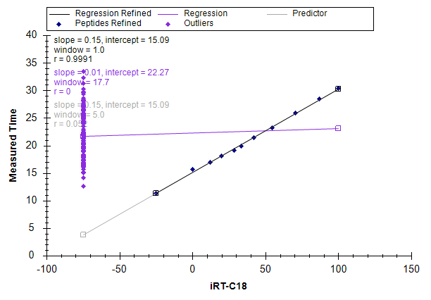
The cluster of purple points, on the left side of the graph indicates that these peptides do not yet have calibrated iRT values. Before calculating the iRT values, however, it is probably a good idea to review the peak integration. If you are really calibrating your own iRT values, you will want to do this very carefully for all peptides.
You might want to use these first unscheduled injections to create a scheduled method that you could measure in multiple replicates to improve your estimate of the mean retention time before converting it to an iRT. With only a single measurement, basic statistics tell us that, on average, 5% of the peptides will have times 2 standard deviations from their mean, which is what you are trying to predict.
In this tutorial, however, you will use only the single measurement, and perform only a cursory check of the integration. To review the peptides where Skyline found issues with the integration, perform the following steps:
The Find form should look like:
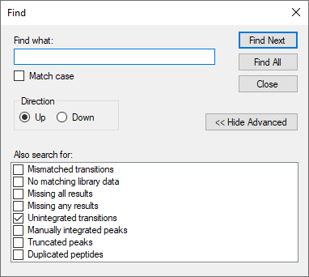
At the bottom of the Skyline window, you should see the Find Results view, showing 6 unintegrated transitions:
To review the peptides containing these peaks, do the following:
You will see that several of these are transitions with interference, and have signal lower than 1% (by area) of the most intense transition:
Skyline excludes such transitions to help you in deciding which transitions to keep for your final quantitative method. If you have already made that decision, however, you hide this information by doing the following:
| Note: This no longer has any impact on Skyline quantitatively. All quantitative transitions will always be included in the total area calculation. To make a transition non-quantitative, you can right-click on it in the Targets view or use the Quantitative property in the Document Grid. |
To calculate iRT values for the target peptides in this document now, perform the following steps:
Skyline will show you the following informational message:
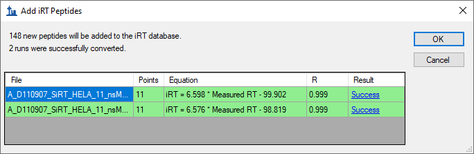
Note that in producing iRT values for the two runs, Skyline has performed a separate linear regression for each run. It uses the linear regression for each run to calculate iRT values for the peptides in that run. If multiple runs contain the same peptide, Skyline will take the mean average of these final calculated iRT values. This is very different from starting by averaging the physical retention times, and allows for gradient changes across the runs. You can review regression graphs in both runs by clicking the hyperlinked text “Success” in the Result column of the grid.
Skyline will ask whether you want to recalibrate your iRT standards relative to the peptides being added.
The Edit iRT Calculator form should now look like:
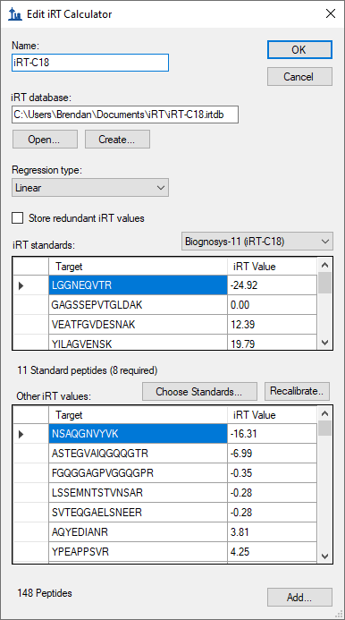
The Retention Times view should change to look like this:

You have just calibrated iRT-C18 values for 148 new human peptides, using data acquired on a 30-minute gradient.
Next, you will explore how iRT allows you to take an existing method to a new chromatographic setting, even changing gradient length, and begin scheduled acquisition with relatively small time windows after only one calibration run.
| Note: Since this tutorial was first written, it has become clear that despite being this flexible, iRT library values function best on chromatography matching as closely as possible to the collection state. A library from the exact same chromatography will function better than one after a column change, or years prior on entirely different chromatography. |
If you were doing this in your own lab, you would open the original ‘iRT Standard.sky’ file, export a method for it, and then acquire that method on your fully prepared sample with the standard mix injected. The tutorial folder contains a raw data file created in exactly this way. The same sample measured above was injected into a mass spectrometer with a new column and a 90 minute gradient, though only the standard peptides were measured.
Before continuing, do the following:
To recalibrate the method you have created to the new column and 90-minute gradient, perform the following steps:
The Peptide Settings form should look like this:
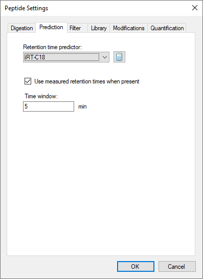
When the data has finished importing, the Retention Times regression graph will be shown as:
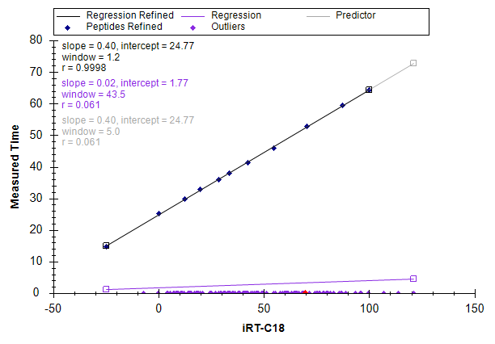
You can see that the times for the standard peptides now range from about 15 to 65 minutes, and none of the target peptides were measured in this run. However, you are now ready to measure them on this new gradient.
Before creating a scheduled method, you can gain a little better understanding of how the transitions will be measured under potential scheduling parameters by doing the following:
The Retention Times view should gain a new Scheduling tab to show a graph like the one below:
If you do not see all three lines shown in the graph above, you can do the following:
From this graph you can see the effect of window size on scheduling. A smaller time window allows fewer transitions to be measured concurrently over a given time period, which allows more transitions to be measured in a single injection given a specific dwell time. The window size required to capture the entire peaks of a percentage of target peptides is approximated by the function below:
Where “z” is a critical value for the number of standard deviations within which the desired percentage fall in a normal distribution, e.g. 95% = 1.96. With perfect prediction and no variance in peak width or retention time, the required window size is just the peak width. Even with perfect prediction, variance in peak width and retention time expands the required window size. Finally, prediction error will expand it further. It is worth noting that even the state-of-the-art method for predicting retention time, a single unscheduled measurement on the target system prior to scheduled acquisition, is not perfect. Since, you are trying to predict the mean retention time; about 5% of all peptides will be at least two standard deviations from their mean in that single measurement.
The iRT method should allow the target peptides for this tutorial to be measured on a 90-minute gradient, within a 5-minute window. The above graph indicates that this can be done without exceeding about 265 transitions being measured in a single cycle. At a dwell time of 10ms, this will yield a maximum 2.6-second cycle time. To create a single method that will measure the 1223 transitions in this document on this new gradient using scheduled acquisition, perform the following steps:
The Export Transition List form should look like:
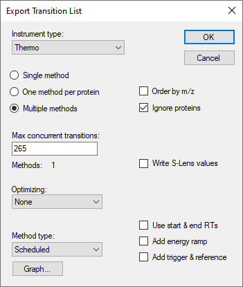
You could also simply click the Single method option, but the fact that the form shows “Methods: 1” confirms that the transitions can be measured in a single injection with the 5-minute window and no more than 265 concurrent transitions measured at any time. This may still be a little high for quantitative measurement, but it is better than the 335 you needed to measure half as many transitions in 2 injections. If you preferred, you could lower the number to 135, and see that Skyline indicates this will take 2 injections, or 90 in 3 injections. But, make sure you set it back to 265 before continuing.
In the Windows File Explorer, you can verify that this creates the file ‘iRT Human+Standard_0001.csv’ in the iRT folder for this tutorial. In Excel, you can verify that this file contains all 1223 transitions, with scheduling start and end times 5 minutes apart.
To review data acquired from a method like the one you just created, first remove the 90-minute gradient calibration data by doing the following:
And now import the data acquired with a method scheduled using iRT by doing the following:
While the data is loading, you can switch the Retention Times view back to Linear Regression by doing the following:
When the data has finished loading, the Retention Times view should present a graph like:
From this graph, it is immediately obvious that there are 2 outlier peptides, which could be caused by miss-integrated peaks in the current data or miss-integrated peaks in the calibration data from which the iRT values were calculated. In this case, the problem is with the peaks that Skyline chose automatically during the iRT calibration on the 30-minute gradient. It is important to note that the data you are viewing was not actually collected with the scheduled method you generated above. If it had been, the chromatograms for the outlier peptides would not even include the peaks detected here. The data were collected with a schedule method created after more thorough review of the calibration data, which you skipped for this tutorial.
If you wonder why neither of the points is the purple color previously designated for “Outliers” in the legend, it is because the correlation coefficient threshold is not set well for a calculator with correlation this high. You can do the following to change the correlation threshold:
The Retention Times graph should now look like:
You can now click on each outlier point, causing Skyline to select it in the peptide view. Then, press Esc to give focus back to the main window, and Ctrl-C to copy the peptide label. You can either collect these in a separate editor for later review, or open a second instance of Skyline on the ‘iRT Human+Standard Calibrate.sky’ file you created earlier. You can then use the Find form to review these 2 peptides:
EVVEEAENGR
LLADQAEAR
In both cases it is pretty hard to see anything you could confidently identify as the peptide of interest in the calibration data. This does illustrate why you should be as careful as possible in your calibration runs.
You could now recalculate the iRT values for all of the peptides in this document based on this more accurate data, which used labeled reference peptides to ensure correct peak picking. You would simply repeat the calibration steps outlined above, and when asked, choose to Replace existing values. In this tutorial, however, you can get rid of the incorrectly calibrated peptides by doing the following:
The 2 outliers should be removed from the graph, and the number of peptides should be reduced by 2 to 156. All of the points appear tightly clustered around the regression line and the correlation coefficient R is actually 0.9989. But, to get a better sense of just how closely measured times come to the linear predictions, do the following:
The Retention Times graph should now look like this:
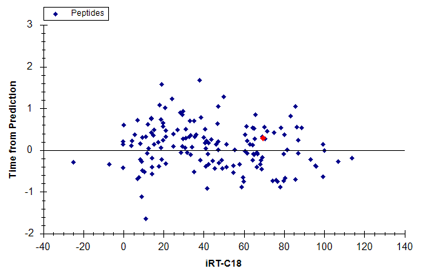
This gives you a clearer sense that measured times are varying within +/- 2 minutes of the predicted times. What retention time scheduling window should you use in this case? What was used in the experiment?
Now click in the Targets view, and use the down-arrow key to review the peptide chromatograms. Skyline will present graphs like the one below:
You will see that all peptides, except the standards, now have light and heavy precursor pairs and generally more points across each peak than the unscheduled data. You will also see that Skyline indicates the predicted time for the peak under an annotation labeled ‘Predicted’.
To answer the question above about the scheduling window, you can do the following:
And after you have noted the 6-minute range of the chromatograms do the following:
In this experiment, the data come from a single injection, but because of the Auto-calculate regression setting, Skyline would calculate a separate regression for each injection even for a document that required multiple scheduled injections to measure all of its peptide, as this one might, if you wanted to ensure more accurate quantification. In exporting methods for such a document, Skyline will include transitions for the standard peptides in every method. This auto-regression feature ensures more accurate retention time prediction than calculating just one linear equation for all injections, and in so doing makes the ‘Predicted’ annotation a stronger peptide identity validation tool.
If you collect data dependent acquisition (DDA) runs that include the standard peptides for your iRT calculator at a high enough concentration that they are reliably sampled and identified from their MS/MS spectra, you can use the resulting data to calculate iRT values in much the same way you did with SRM data. These iRT values will be less accurate, on average, because they are based on scan times which may have occurred anywhere on the peptide elution peak. Scan-based iRT values can, however, be used to transition directly from DDA discovery experiments to scheduled SRM, saving quite a bit of instrument time in the process. This has also become the most popular method of calibrating iRT values for use in querying chromatogram peaks within data independent acquisition (DIA) data, as described in the “Analysis of DIA/SWATH Data” tutorial.
In the iRT folder for this tutorial, you will find a sub-folder ‘Yeast+Standard’, which contains a spectral library ‘Yeast_iRT_C18_0_00001.blib’. This spectral library was built from SEQUEST peptide search results on two DDA runs of a yeast lysate with the Biognosys RT standard mix added. As you will see below, once you have enough peptides in your iRT database, you will not always need to have the standard peptides included in the data you import. You will, however, need to use the BiblioSpec library format which Skyline builds. Other formats, do not maintain separate retention times for separate mass spec runs, and so make it impossible to perform regression on sets of retention times with identical chromatography.
You can add iRT values for the peptide spectrum matches in this library by doing the following:
The Add Spectral Library form should look like this:
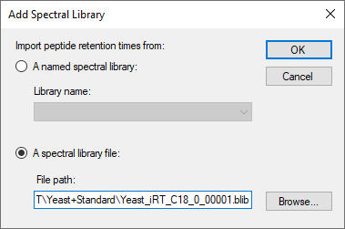
Skyline should present a form that looks like this:
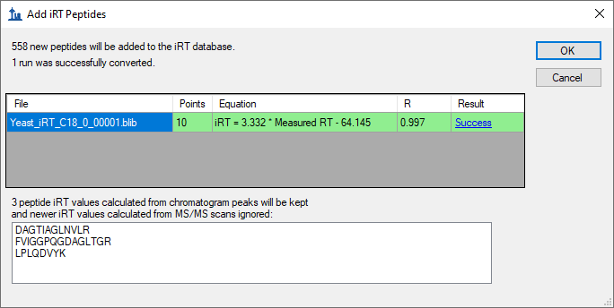
The form tells you that Skyline was able to calculate a single valid regressions for both DDA runs in the library. When possible, Skyline will perform internal run-to-run regression with all the peptides matching between runs, which has proven to work better than regression with only standard peptides. Using this final calibration regression, Skyline has calculated iRT values for 558 new peptides. After internal alignment, Skyline uses the median time for all MS/MS spectra matched to a peptide, which helps to avoid outlier matched MS/MS spectra from causing nonsense iRT values. Skyline has also found 3 peptides for which you already have iRT values based on chromatogram peaks, which it will therefore skip.
Skyline will ask whether you want to recalibrate your iRT standards relative to the peptides being added.
The Edit iRT Calculator form should now show it has 706 peptides in the Other iRT values list.
You could now use the iRT values you just calculated based on MS/MS scan times to schedule SRM acquisition of these peptides, and then use the SRM data to get more accurate iRT values based on chromatogram peak times. However, by using Skyline MS1 Filtering, you can also extract chromatogram peak times directly from the original DDA runs. Complete details on how to set up and import data into a MS1 Filtering document can be found in the MS1 Full-Scan Filtering tutorial. In this tutorial, you can take a quick look at a document which has already been created and had data imported, covering the two DDA runs used to create the spectral library, by doing the following:
The Skyline window should look something like:
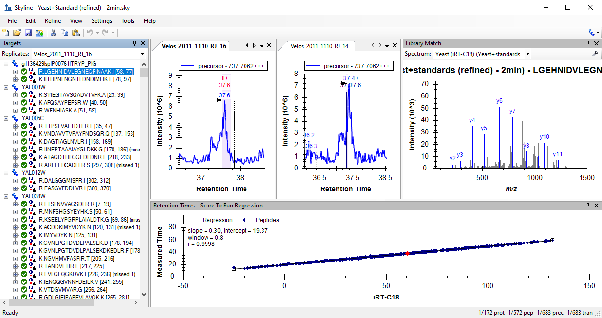
You can double-click in the title bar of the Retention Times view to get a better look at the graph, and see that the correlation coefficient for the regression of the measured time by the iRT values calculated from the library spectra is 0.9998. So, perhaps there is less to gain from using chromatogram peaks versus using MS/MS scan times than one might hope. On the other hand, this data set has been manually refined to retain only peptides detected in both runs with a clear peak in both runs. You may also want to impose some detection criteria when using spectral library data to calculate initial canonical iRT values for peptides.
The chromatograms you see in this file were extracted from the MS1 scans of the DDA runs used to build the spectral library. You can also see the times at which identified MS/MS scans were recorded, as they are annotated with ‘ID’ in the chromatogram graphs. Again, you can learn more about how to use this data processing method to your advantage in the MS1 Full-Scan Filtering tutorial.
To convert the iRT values calculated using MS/MS scan times to ones using the chromatogram peak times in this document, perform the following steps:
Skyline presents a form that looks like this:
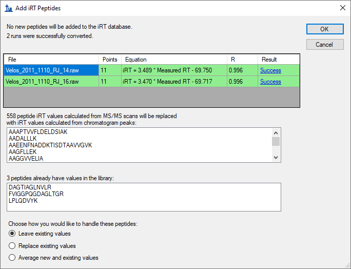
To tell you that it will replace the 558 iRT values you added in the previous section. Now that you are using chromatogram peak times, you also have the option of replacing the 3 peptides shared by the yeast and human samples, or using the average of the two.
Skyline will ask whether you want to recalibrate your iRT standards relative to the peptides being added.
You now have 706 peptides with reasonably good iRT values, though they have been calculated with no more than 2 replicates. In these initial cases, you have used data sets that included the peptide standard mix specified in the iRT-C18 calculator definition. This is not required, however. You can now go on to calculate new iRT values from any data set that has enough peptides in common with the iRT database you are using. Skyline will use any common peptides that yield a regression with correlation of 0.99 or higher, as long as there are at least 20 of these.
In testing the iRT support in Skyline, a spectral library and a Skyline document like the ones above were created from public data in the PeptideAtlas3. This data set contained over 20 replicates, and yielded over 1000 more iRT values, but was obviously too large to include in this tutorial.
| Note: In recent years, since it was presented in Selevsek, MCP 2015, also for yeast, chemical fractionation with 10-30 DDA runs have been used to create proteomewide spectral libraries with iRT values calibrated from MS/MS spectra. These libraries now often contain iRT values for over 50,000 peptides. |
You may have also noticed that the menu Skyline shows when you click the Add button in the Edit iRT Calculator form contains the action Add iRT Database. This menu item can be used to merge an existing iRT database into the current calculator. If the database uses the same standard peptides, then these are used to perform the regression for conversion from one database to the other. Otherwise, as with other data sources, Skyline will use the peptides the two databases have in common that yield a regression with correlation of 0.99 or higher, as long as there are at least 20 of these.
The Open button in the Edit iRT Calculator form, allows you to use an existing iRT database, perhaps one you received from someone else.
You can also use the Choose Standards button in the Edit iRT Calculator form to change the standard peptides to any set of peptides contained in the database, and you can use the Recalibrate button to change the iRT scale.
In this tutorial, you have learned to use the Skyline support for iRT, a standard way of storing empirically measured peptide retention times so that they may be used for scheduling targeted methods (SRM or PRM), targeted extraction from DIA data, and post-acquisition peptide identity validation. A single calibration injection is frequently all that is necessary to schedule any number of peptide targets for SRM or PRM acquisition, as long as you have stored iRT values for the peptides they measure. More accurate retention time prediction also makes an iRT predictor a more powerful tool for peptide identity confirmation than sequence-based prediction. Skyline support makes the iRT method easy to use and iRT values easy to produce. You can base your iRT values on any scale (though iRT-C18 has become the most popular by far) and any set of standard peptides. You can even use a set of peptides endogenous to a particular experiment as your standard, as long as they can be consistently measured and span most of the gradient range you are attempting to predict. And, Skyline makes it easy to merge iRT databases when the databases have peptides in common. You have learned about iRT-C18, which is the standard iRT scale defined in the original paper. You can use a kit in your own experiments. Skyline now offers a half dozen or so calibrated to iRT-C18. Skyline makes it easy to use the iRT-C18 scale, but change your standard peptides to any set of peptides that has been calibrated into that scale, as you have now done with hundreds of common human and yeast peptides.
1. Krokhin, O. V. et al. An improved model for prediction of retention times of tryptic peptides in ion pair reversed-phase HPLC: its application to protein peptide mapping by off-line HPLC-MALDI MS. Mol. Cell Proteomics 3, 908-919 (2004).
2. Escher, C. et al. Using iRT, a normalized retention time for more targeted measurement of peptides. Proteomics (accepted) (2012).
3. Deutsch, E. W., Lam, H. & Aebersold, R. PeptideAtlas: a resource for target selection for emerging targeted proteomics workflows. EMBO Rep 9, 429-434 (2008).